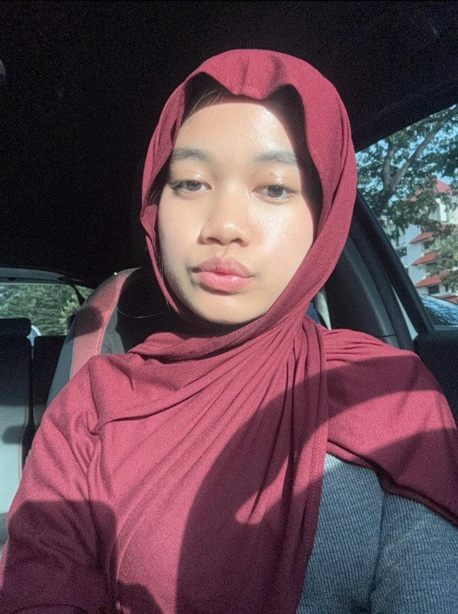

Mahasiswa Rekayasa Kecerdasan Artifisial
Email: sittiaminahms@gmail.com | No HP: 085161085121
Mahasiswa Rekayasa Kecerdasan Artifisial di Institut Teknologi Sepuluh Nopember (ITS) yang memiliki ketertarikan pada pengembangan teknologi berbasis AI serta eksplorasi kreatif di bidang desain dan bisnis. Terbiasa mengerjakan berbagai final project berbasis pemrograman dan problem-solving, dengan pendekatan yang terstruktur dan analitis. Aktif dalam organisasi dan kepanitiaan, yang melatih kemampuan manajemen waktu, komunikasi, dan tanggung jawab. Memiliki kombinasi kemampuan teknis dan kreatif mulai dari coding, editing, desain, hingga pengembangan bisnis serta dikenal sebagai pribadi yang adaptif, kritis, dan penuh inisiatif.
Saya ingin membuat web untuk bisnis catering, yang dapat memudahkan pelanggan untuk memesan makanan secara online, melihat menu, dan melakukan pembayaran dengan mudah. Web ini memiliki fitur untuk memilih isian dari catering itu sendiri, mulai dari nasinya (misal nasi biasa/nasi daun jeruk), lauk utama, sayur, dan lain-lain. Selain itu, web ini juga akan memiliki fitur untuk melihat status pesanan dan memberikan feedback setelah menerima pesanan.
Bisnis di bidang teknologi, food and beverage, dan fashion.